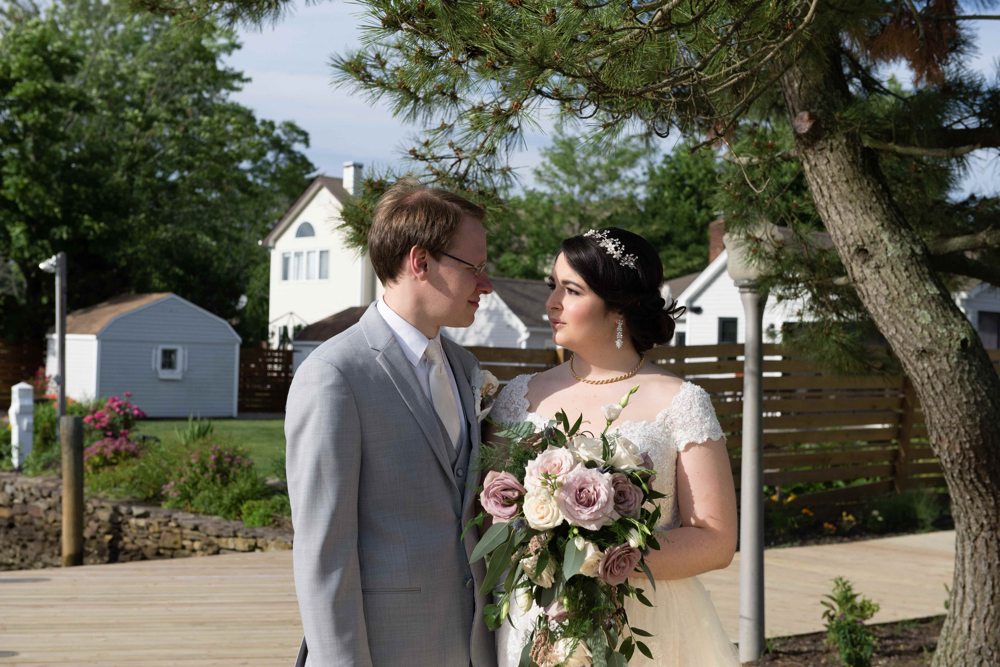

Happy Anniversary my Love

My sweet Mary, Happy (in advance) Anniversary!!!!
To show that you are my favourite and I love you so much, I took the freedom to kind of modify our plans tonight. I canceled the reservation at Hortus, cause we are going somewhere else. But where? Eh, eh, it's not that simple, you're gonna have to figure it out :) The way you do that, is by imputing some keywords in the box below. Each correct keyword input will display a clue to a location you must go to, to find... the next clue! The last clue will be the place where you are going to meet me! The hunt should end at 7:30pm, but the first clue won't appear until 4:30pm, so you should have enough time :)
The first keyword you should input is: the last name of the singer of our wedding song
Good luck and see you in the secret place!